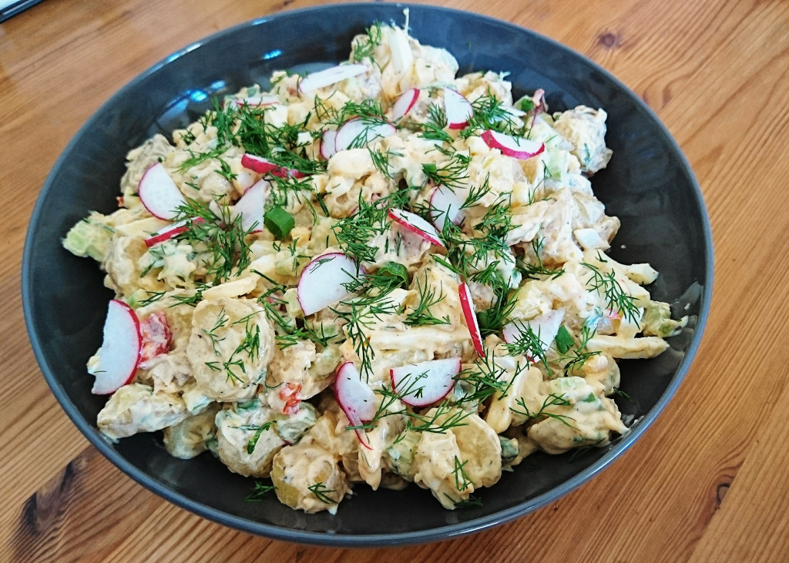

Restaurant-Style Potato Salad

Description
Potato salad is a salad dish made from boiled potatoes, usually containing a dressing and a variety of other
ingredients such as boiled eggs and raw vegetables.
Ingredients
- 2 pounds russet potatoes
- 1 cup mayonnaise
- 4 teaspoons sweet pickle relish
- 4 teaspoons white sugar
- 2 teaspoons chopped white onion
- 2 teaspoons prepared mustard
- 1 teaspoon white wine vinegar
- 1 tablespoon minced celery
- 1 teaspoon minced pimento
- ½ teaspoon shredded carrot
- ¼ teaspoon dried parsley
- ¼ teaspoon ground black pepper
- salt to taste
Directions
- Step 1
-
Bring a large pot of salted water to a boil. Add potatoes and cook until tender but still firm, about 15 minutes. Drain, cool, and chop.
- Step 2
-
In a large bowl, combine potatoes, mayonnaise, sweet pickle relish, sugar, onion, mustard, vinegar, celery, pimentos,
carrot, parsley, pepper, and salt. Mix well, chill and serve.